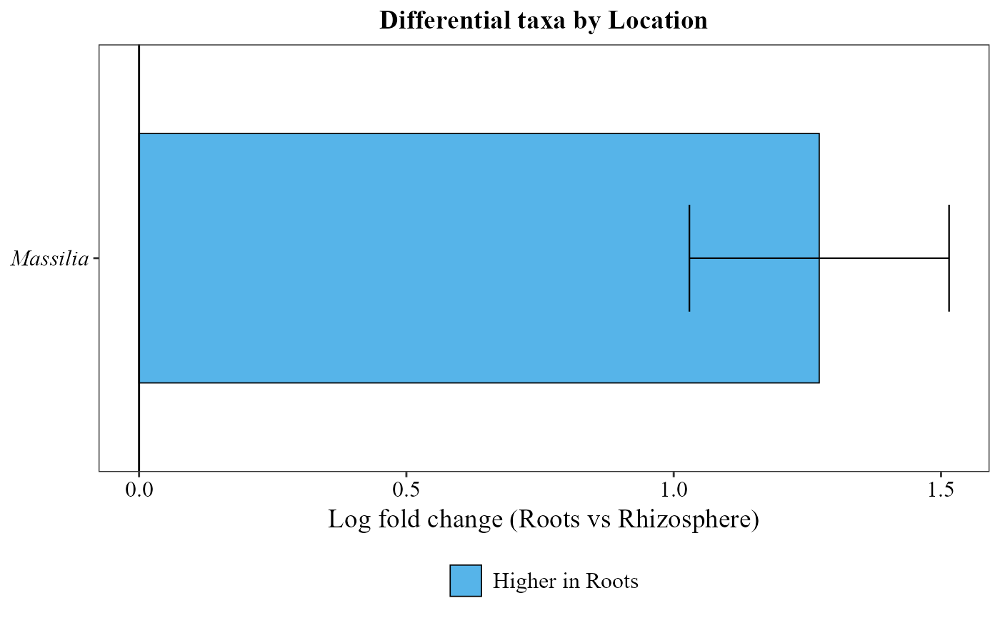

Runs ANCOMBC2 on a table and metadata, then visualizes differentially abundant taxa.
Usage
ancombc_plot(
table,
metadata,
group_col,
level = "genus",
min_prevalence = 0.1,
p_adjust_method = "holm",
formula = NULL,
rand_formula = NULL,
ref_level = NULL,
diverging_palette = "BuOr",
x_axis_title = NULL,
y_axis_title = NULL,
bar_colors = c("#56B4E9", "#E69F00"),
save_table = FALSE,
table_filename = "ancombc_results.txt"
)Arguments
- table
A data frame with taxa in rows and samples in columns. The last column must be named
taxonomy, containing full taxonomic strings.- metadata
A data frame containing sample metadata. Its first column must hold the sample IDs (the column names of
table).- group_col
Character. Name of the column in
metadatathat defines the groups. If it is numeric, it is treated as a continuous covariate.- level
Character or
NULL. Taxonomic level to agglomerate to before runningancombc2(e.g."genus","family"; case-insensitive). Default"genus". PassNULLto skip agglomeration and run ANCOMBC2 directly on the ASV/OTU/species-level table (rows oftable, as-is).- min_prevalence
Numeric. Prevalence cut-off passed to
ancombc2(default0.1). Lower values retain more taxa.- p_adjust_method
Character. Multiple-testing correction for the ANCOMBC2 p-values of the taxa (passed to
ancombc2()), any method ofstats::p.adjust(). Default"holm";"none"uses the raw p-values. Use"BH"for a less strict correction with few samples.- formula
Character. Right-hand side of the fixed-effects formula passed to
ancombc2(e.g."group + age"). IfNULL(default)group_colis used alone.- rand_formula
Character. Random-effects formula passed to
ancombc2for mixed models (e.g."~ 1 | subject_id"). DefaultNULL.- ref_level
Character. Reference level of
group_col, the baseline of the comparisons. IfNULL(default), the first factor level is used (e.g.ref_level = "control"compares every other group against control).- diverging_palette
Character. Colorblind-friendly diverging palette of the heatmap (3 or more groups):
"BuOr"(blue-orange, default),"BuVm"(blue-vermillion),"BuPk"(blue-pink),"GnPk"(green-pink) or"PuYl"(purple-yellow). Not used by the bar plot, which usesbar_colors.- x_axis_title, y_axis_title
Titles for the x- and y-axis. Default
NULL: the log fold change of the comparison on x of the bar plots, and no title otherwise.- bar_colors
Character vector of two colors for the bar plot: the first for the taxa higher in the non-reference group, the second for those higher in the reference group. Default
c("#56B4E9", "#E69F00").- save_table
Logical. If
TRUE, saves the full ANCOMBC2 results table as a tab-delimited file. DefaultFALSE.- table_filename
Character. Name or path of the saved file (used when
save_table = TRUE). Default"ancombc_results.txt".
Examples
table_path <- system.file("extdata", "tabla_bacteria.txt", package = "MicroBioMeta")
table <- read.delim(table_path, row.names = 1, check.names = FALSE)
metadata_path <- system.file("extdata", "metadata_bacteria.txt", package = "MicroBioMeta")
metadata <- read.delim(metadata_path, check.names = FALSE)
# \donttest{
ancombc_plot(
table = table,
metadata = metadata,
group_col = "Location",
min_prevalence = 0.3,
p_adjust_method = "BH"
)
#> Registered S3 method overwritten by 'lme4':
#> method from
#> na.action.merMod car
#> Checking the input data type ...
#> The input data is of type: matrix
#> The imported data is in a generic 'matrix'/'data.frame' format.
#> PASS
#> Checking the sample metadata ...
#> The specified variables in the formula: Location
#> The available variables in the sample metadata: BarcodeSequence, LinkerPrimerSequence, Loc, FW, Location, Root_L, Stem_L, Root_DW, Treatment, TOC, Root_FW, ReversePrimer, Leaves_No, SMC, pH, Silt, WHC, TN, Plot, EC, DW, Sand, Clay, Arbus_per, Cod_No, Code, Month, Description
#> PASS
#> Checking other arguments ...
#> The number of groups of interest is: 2
#> Warning: The group variable has < 3 categories
#> The multi-group comparisons (global/pairwise/dunnet/trend) will be deactivated
#> The sample size per group is: Rhizosphere = 24, Roots = 22
#> PASS
#> Obtaining initial estimates ...
#> Estimating sample-specific biases ...
#> Loading required package: foreach
#> Loading required package: rngtools
#> ANCOM-BC2 primary results ...
#> Conducting sensitivity analysis for pseudo-count addition to 0s ...
#> For taxa that are significant but do not pass the sensitivity analysis,
#> they are marked in the 'passed_ss' column and will be treated as non-significant in the 'diff_robust' column.
#> For detailed instructions on performing sensitivity analysis, please refer to the package vignette.
#> Term 'Location': 1 significant taxa

# }